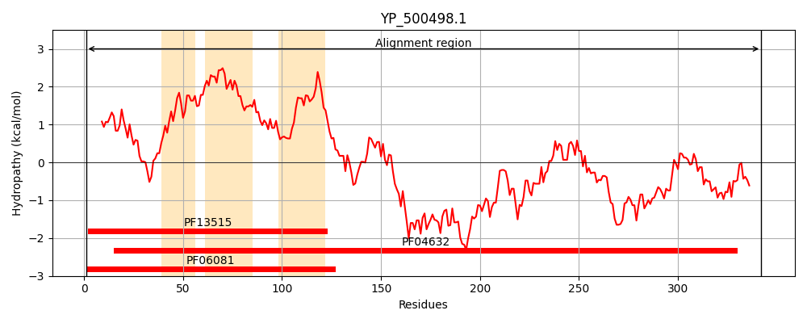
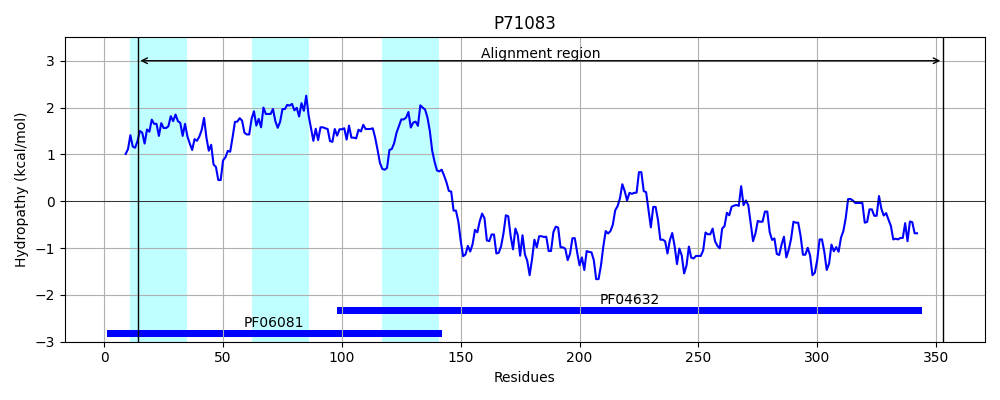
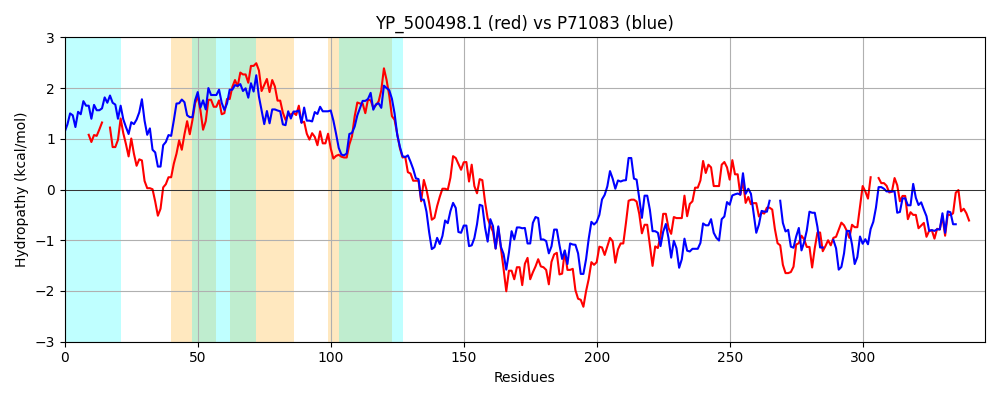

Hit Accession: P71083
Hit TCID: 2.A.85.4.2
Hit Description: gnl|BL_ORD_ID|11308 gnl|TC-DB|P71083|2.A.85.4.2 UPF0421 protein ygaE OS=Bacillus subtilis GN=ygaE PE=3 SV=1
Mach Len: 346
e:0.000000
Query TMS Count : 3
Hit TMS Count: 3
TMS-Overlap Score: 2.000000
Predicted Substrates:None
BLAST Alignment:
Score: 551 , Bit scores: 216 bits, E-value: 5.9e-68, Alignment length: 346, Percentage identity: 35
Query: 1 MSIASLLPDDVGLKA--LAGVSAVVAMQPSIYRSFKTVSDQALGNIIGAILSVTMVTIFSDNFIIMGVTVIVLIAILFKFNLAHVATLASVTALIIMGQHTGSFYITAFYRFVLVMIGVISSSLVNFVFLPPKFETKIYYNSLNISSDIFMWFKLVLNDTTEFNNIKQDSHNLKQRVEKLEKIYDYYSEERPITKKHIHQQNRKKILFREVVQTTRQAYEVLNKLSRYQNDLYLLNNNFLLQIKLDLDSLTAFHEQILASLSKKARYNVTHVDYELDNPQKKDLLSTFQHELINHPYQTEYSFA--NVMQIVAAIEEYRHHLEHLDRIRISFFTYHRSDADIEIVE 342
+++A L +GL A AG++A+ A+QPSIYRSF + DQ NIIGA+++ IF + I++G+T +++I I+ K + H ++A VT + I+ F + A R V++GV+SS +VN VFLPPK+ETK+ +N++ + +I W +L + +TE + +K+D LK+++ KL++ Y Y EER KK + ++RK +LFR+ + T +A + L KL R +N++Y + F + +LD L +HE+IL K + H D + + K LL+ + + T+ N++ I+A+ EYR LEHL+ + SF TYH D +IE E
Sbjct: 14 ITLALYLASWIGLPAPIFAGIAAIFAIQPSIYRSFLIIIDQVQANIIGAVIATVFGLIFGPSPIMIGLTAVIVITIMLKLKIEHTISIALVTVIAILESAGDDFLMFALIRTSTVILGVLSSFIVNLVFLPPKYETKLIHNTVENTEEIMKWIRLSMRQSTEHSILKEDIEKLKEKMIKLDQTYLLYKEERSYFKKTTYVKSRKLVLFRQAIITANRALDTLKKLHRLENEIYHMPEEFQETLTEELDYLLYWHERILMRFVGKIK---PHDDAVEEGIRYKQLLT---KSFLKNQQNTDEELIDYNMLNIMASAVEYREQLEHLETLITSFQTYHPKDCEIETEE 353 | Protein Hydropathy Plots: |
|---|
|  |  |
Pairwise Alignment-Hydropathy Plot:
|
|---|
|  |